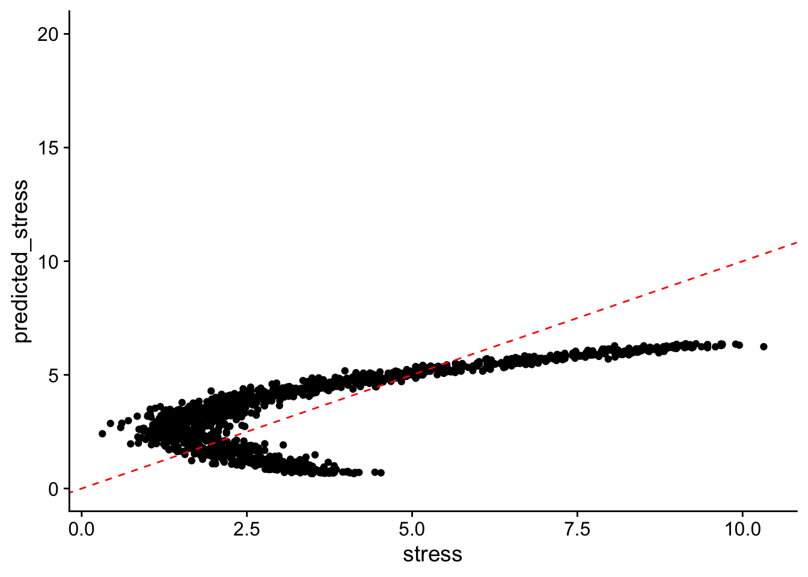

In this lab, we will cover the basics of fitting and assessing supervised machine learning algorithms. Specifically, we will cover fitting a random forest model, sample splitting, and model performance metrics. As discussed in lecture, these machine learning methods are being increasingly applied in the social sciences. For an overview on applications of machine learning in sociology and best practices, please see:
Kapoor, Sayash, Emily Cantrell, Kenny Peng, Thanh Hien Pham, Christopher A. Bail, Odd Erik Gundersen, Jake M. Hofman, Jessica Hullman, Michael A. Lones, Momin M. Malik, Priyanka Nanayakkara, Russell A. Poldrack, Inioluwa Deborah Raji, Michael Roberts, Matthew J. Salganik, Marta Serra-Garcia, Brandon M. Stewart, Gilles Vandewiele, and Arvind Narayanan. 2023. ‘REFORMS: Reporting Standards for Machine Learning Based Science’. doi: 10.1126/sciadv.adk3452.
Exercise 1
In exercise 1, we’ll simulate some data and practice fitting and assessing the performance of models. We’ll fit an ordinary least squares (OLS) regression model and random forest model (one of the most popular machine learning algorithms).
Simulating data can be a helpful way of building intuition for machine learning and statistical concepts. When we simulate data, we can control the specific relationship between the features/predictors and the outcome. By generating data with known relationships between features (predictors) and the outcome, we can assess how well different algorithms recover these relationships. Since we know the true underlying relationships in simulated data, we can directly compare the estimated results to the ground truth.
Here, we’ll investigate the (hypothetical) association between coffee consumption in cups and reported average stress level for a day. Before we get started, we’ll load in all the packages we need for our analysis.
Attaching package: 'cowplot'
The following object is masked from 'package:lubridate':
stamp
library(ranger) ## ranger ## set seed for reproducibility set.seed(47)
We also set a seed for this analysis. This ensures that our results are reproducible. A seed is an initial value used by a random number generator to produce a sequence of pseudo-random numbers. Setting a seed ensures that the same sequence of random numbers is generated every time the code is run, making results reproducible and consistent across different runs.
Simulating data
To simulate the data, we’ll use a few helpful functions:
runif generates \(n\) draws from uniform distribution between a given min and max value
rnorm generates \(n\) draws from a normal distribution with a given mean and standard deviation
We’ll create a predictor variable (in machine learning language, a “feature”) called coffee. This will correspond to cups of coffee consumed in a given day.
We’ll then create an outcome variable stress that is related to coffee in a non-linear fashion. We’ll combine these two variables together into one data.frame.
## non-linear data coffee =runif(n =5000, min =0, max =5)stress = ((2* coffee^2) - (7* coffee) +10+rnorm(n =5000, mean =0, sd =1))/2.6## quadratic relationship with some noise from rnorm function ## create a data frame with columns coffee and stress sim_data <-data.frame(coffee, stress)
Exploratory data analysis
The first thing that you want to do when you get new data is exploratory data analysis. The primary goal of exploratory data analysis is to take a first pass at detecting patterns, spot anomalies/outliers, and summarize key characteristics. The best way to start is often through visualization.
In machine learning, sample splitting is a key step to ensure that models generalize well to unseen data. The simplest sample splitting is a test-train split. Recall from lecture:
The training set is used to fit the model
The testing set evaluates how well the model performs on unseen data
This helps prevent overfitting, where a model performs well on training data but poorly on new data.
To split the sample, we can use the initial_split() function from the rsample package. The rsample package is part of the tidymodels framework.
This function will automatically randomly split the data into a training partition and a test partition according to the proportions we provide as an argument to the function.
## split into two folds (partitions)sim_data_split <-initial_split(sim_data, prop = .75)## split into a train-test sample sim_data_train <-training(sim_data_split) sim_data_test <-testing(sim_data_split)
Simple Ordinary Least Squares (OLS) Regression Model
First, we’ll try fitting an OLS regression model (linear regression). Simple models like OLS are easy to interpret and are generally a good starting place for the modeling process. We’ll fit a model of the form:
\[\hat{Y} = \beta_0 + \beta_1 X + \varepsilon\]
Where:
\(\hat{Y}\) represents the predicted stress
\(\beta_0\) is the intercept
\(\beta_1\) is the coefficient for cups of coffee
\(X\) is the coffee variable,
\(\varepsilon\) represents the error term
They can also serve as a helpful benchmark to help you understand how much better more complex machine learning algorithms are doing than a simple model.
# Fit modelsmodel_linear <-lm(stress ~ coffee, data = sim_data_train)## print out summary of linear model summary(model_linear)
Call:
lm(formula = stress ~ coffee, data = sim_data_train)
Residuals:
Min 1Q Median 3Q Max
-2.832 -1.222 -0.362 1.111 4.030
Coefficients:
Estimate Std. Error t value Pr(>|t|)
(Intercept) 0.65581 0.04789 13.69 <2e-16 ***
coffee 1.14323 0.01667 68.58 <2e-16 ***
---
Signif. codes: 0 '***' 0.001 '**' 0.01 '*' 0.05 '.' 0.1 ' ' 1
Residual standard error: 1.472 on 3748 degrees of freedom
Multiple R-squared: 0.5565, Adjusted R-squared: 0.5564
F-statistic: 4703 on 1 and 3748 DF, p-value: < 2.2e-16
# Predict on the test datasetspredicted_stress <-predict(model_linear, sim_data_test)
Understanding check: What is the intercept telling us? What is the coefficient for coffee telling us? Are the coefficients significant? Do significant coefficients tell us anything about model performance?
Model Performance Metrics
To assess the performance of our model, we’ll use several different model performance metrics.
Mean Absolute Error (MAE)
MAE measures the average absolute differences between actual and predicted values:
It provides an intuitive measure of the magnitude of error, treating all deviations equally.
Root Mean Squared Error (RMSE)
RMSE squares the errors before averaging, making it more sensitive to large deviations. It then takes the square root of the mean squared errors to bring the error units back to the original scale of the dependent variable, making it easier to interpret compared to Mean Squared Error (MSE):
where \(\bar{y}\) is the mean of the observed values. Higher values indicate a better fit, with \(R^2 = 1\) representing a perfect model and \(R^2 = 0\) representing a model doing no better than predicting mean of outcome variable.
Each metric provides different information. MAE is simple to interpret, RMSE places a larger penalty on larger errors (why might we want this?), and \(R^2\) provides a simple metric of overall model fit.
To assess model performance, we’ll need to add our predictions onto our test data.
## add predictions onto test (hold-out) data sim_data_test_w_predictions <- sim_data_test %>%mutate(predicted_stress = predicted_stress)
Now, let’s visualize our errors in a calibration plot, which allows us to directly compare the predicted vs. actual values and analyze residuals.
## visualize data sim_data_test_w_predictions %>%ggplot(aes(x = stress, y = predicted_stress)) +geom_point() +theme_cowplot() +ylim(0, 20) +geom_abline(color ="red", linetype ="dashed")

If our predictions were perfect, they would lie along the red dashed line at 45 degrees. Here, we see lots of deviations away from this line… based on this visual check, it looks like our model could be improved!
Calculate model performance metrics
To more formally assess the performance of our model, we’ll calculate the three error metrics introduced above. We’ll write functions to calculate these error metrics—in general, if you anticipate reusing code more than once, it can be helpful to write a function. Spend a little bit of time following the logic of each function and ensuring it’s correct.
# Function to compute Mean Absolute Error (MAE)mae <-function(actual, predicted) {mean(abs(actual - predicted))}# Function to compute Root Mean Squared Error (MSE)rmse <-function(actual, predicted) {sqrt(mean((actual - predicted)^2))}# Function to compute R-squared (R²)r_squared <-function(actual, predicted) { ss_total <-sum((actual -mean(actual))^2) ss_residual <-sum((actual - predicted)^2)1- (ss_residual / ss_total)}
Let’s use the functions we just created to calculate model performance metrics for our linear model:
The model is doing moderately well — the \(R^2\) value tells us that 56% of the variance is explained by the model (but 44% is not).
Machine learning - random forest
Random forest is an ensemble learning method that improves prediction accuracy by combining multiple decision trees.
At a high level, random forest works by:
Creating multiple decision trees using different random subsets of the training data
Averaging predictions across trees (for regression) to make a final prediction
Reducing overfitting by ensuring that individual trees don’t rely too heavily on any single feature or pattern in the data
Random Forest is particularly useful for handling nonlinear relationships (like ours!), high-dimensional datasets (many features), and noisy data. We’ll use it to model the relationship between coffee and stress and evaluate whether it outperforms our linear model. We picked random forest because of its popularity and versatility.
To fit the model, we’ll use the tidymodelpackage. This is a well-maintained modern framework in R for streamlining machine learning workflows. It’s similar to the tidyverse in that it contains multiple core packages and adheres to tidyverse principles.
We’ll first need to define the random forest model we want to fit. We’ll start by specifying the hyperparameters for our random forest model. Hyperparameters are configurable settings that control a model’s learning process; they have to be specified in advance and not learned from the data. Here’s the hyperparameters we’ll use:
mtry = 1: Only one predictor is considered for each split (we only have 1 predictor).
trees = 500: The model builds 500 decision trees for better averaging.
min_n = 5: Each terminal node must have at least 5 observations.
We’ll set the engine to Ranger, which is a fast implementation of random forest. We’ll also need to specify that this is a regression problem (predicting a continuous outcome) and not a classification problem (predicting a categorical or binary outcome).
# Define a random forest model specificationrf_spec <-rand_forest(mtry =1, trees =500, min_n =5) %>%set_engine("ranger") %>%set_mode("regression")# Train the Random Forest modelrf_fit <- rf_spec %>%fit(stress ~ coffee, data = sim_data_train)
Next, we’ll use our random forest model to make predictions in our test dataset.
## make predictions sim_data_test_rf <-predict(rf_fit, new_data = sim_data_test) # Rename predicted columnsim_data_test_rf_predictions <- sim_data_test_rf %>%bind_cols(sim_data_test) %>%# Add actual values for comparisonrename(predicted_stress_rf = .pred) # Rename predictions to be normal
Let’s make a calibration plot to compare how well our random forest predictions are doing out-of-sample.
This quick visual inspection suggests that our random forest model is performing much better than our linear regression! There is much higher agreement between our true, observed stress and our predicted stress. Let’s investigate this more formally…
Exercise 1 questions:
1.1 Using our model performance functions from above, calculate for the random forest algorithm’s predictions in the test data:
Mean Absolute Error (MAE)
Root Mean Squared Error (RMSE)
\(R^2\) (Coefficient of Determination)
## Calculate mae, mse, and r_squared rf_model_performance <- sim_data_test_rf_predictions %>%summarize(rmse =rmse(stress, predicted_stress_rf),mae =mae(stress, predicted_stress_rf),r_squared =r_squared(stress, predicted_stress_rf))## print out random forest model performance rf_model_performance
# A tibble: 1 × 3
rmse mae r_squared
<dbl> <dbl> <dbl>
1 0.445 0.359 0.960
1.2 Does the random forest model or linear regression model have better predictive accuracy? Compare their MAE, RMSE, and \(R^2\). Does it matter which error metric we use?
## rf model performance rf_model_performance
# A tibble: 1 × 3
rmse mae r_squared
<dbl> <dbl> <dbl>
1 0.445 0.359 0.960
## lm model performance lm_model_performance
rmse mae r_squared
1 1.490971 1.271684 0.5504965
The \(R^2\) is higher for random forest than the linear model; a higher \(R^2\) corresponds to better model performance. Across models, the RMSE and MAE values are lower for random forest than for the linear model. This again suggests that the random forest model is performing better than the linear model.
1.3 Bias in machine learning refers to the systematic deviation of model predictions from the true values. A model is considered biased if it consistently overestimates or underestimates the actual values. To formally assess bias, we compute the average prediction error (mean residual):
Write a function to calculate bias (hint: modify the mean absolute error function). Apply this function to predictions from both the linear model and random forest model. Do either of the models systematically over- or under-predict?
# Function to compute bias bias <-function(actual, predicted) {mean(predicted - actual)}## bias for linear model bias_linear_model <- sim_data_test_w_predictions %>%summarize(bias =bias(actual = stress, predicted = predicted_stress))## bias for random forest bias_rf <-sim_data_test_rf_predictions %>%summarize(bias =bias(actual = stress, predicted = predicted_stress_rf))## print out bias paste("The bias is for the linear model is:", round(bias_linear_model, 4))
[1] "The bias is for the linear model is: -0.0476"
paste("The bias is for random forest models is:", round(bias_rf, 4))
[1] "The bias is for random forest models is: -0.0044"
Answer: Given that the units range from 0 to 10, the bias for both model is exteremely small, especially for the random forest model.
Exercise 2 - Predicting Subnational Internet Adoption
In exercise 2, we will train and evaluate a random forest model to predict internet adoption among women aged 15–49 at the first administrative level (e.g., state). Unlike previous exercises, we will use real-world data rather than simulated data.
Our dataset includes various subnational features, such as:
The weighted proportion of men and women on Facebook
Geospatial indicators, such nightlight intensity (a good proxy for level of economic development in a given area)
To assess how well our model generalizes, we will use two different cross-validation strategies.
Read in real data
Download the css_lab2_subnational_internet.csv file from the canvas page and read it in using the read_csv package.
## read in data ## you'll need to update this path internet_df <-read_csv("~/Downloads/css_lab2_subnational_internet.csv")
Rows: 570 Columns: 14
── Column specification ────────────────────────────────────────────────────────
Delimiter: ","
chr (2): gid_1, country
dbl (12): perc_used_internet_past12months_wght_age_15_to_49_wom, perc_used_i...
ℹ Use `spec()` to retrieve the full column specification for this data.
ℹ Specify the column types or set `show_col_types = FALSE` to quiet this message.
Feature Definitions
It’s important to understand what each variable (feature) in your dataset is telling you. Often there is a codebook or some other documentation available that provides descriptions of features along with other helpful information. This is a good place to start—sometime variables (features) aren’t actually capturing what you would expect!
The dataset we are using here was created by the Digital Gender Gaps team by assembling data from various sources. Here’s the descriptions of the features we have available in our dataset:
gid_1: Subnational administrative unit identifier (from GADM, a global administrative boundaries database).
country: Name of the country corresponding to the administrative unit.
perc_used_internet_past12months_wght_age_15_to_49_wom: Percentage of women (ages 15–49) who used the internet in the past 12 months, weighted (from Demographic and Health Surveys)
perc_used_internet_past12months_wght_age_15_to_49_fm_ratio: Female-to-male ratio of internet usage among individuals aged 15–49, weighted (from Demographic and Health Surveys)
hdi_national: National-level composite measure of health, education, and standard of living (from UNDP)
gdi_national: National-level Gender Development Index (GDI), measuring inequality with respect to life expectancy at birth, education, and expected years of schooling
subnational_gdi: Subnational-level Gender Development Index (from Global Development Lab)
subnational_hdi_females: Subnational composite measure of health, education, and standard of living for women (from Global Development Lab)
subnational_hdi_males: Subnational composite measure of health, education, and standard of living for men
nl_mean_zscore: Z-score of nighttime lights intensity, often used as a proxy for economic activity (from NASA VIIRS)
pop_density_zscore: Z-score of population density, normalizing population per unit area (from WorldPop team)
fb_pntr_18p_female: Facebook penetration rate among women aged 18+ (percentage of women on Facebook in the last month relative to population) (from FB marketing API)
fb_pntr_18p_male: Facebook penetration rate among men aged 18+ (percentage of women on Facebook in the last month relative to population) (from FB marketing API)
Fit machine learning model
First, we’ll split our data into a test and a training partition, just like we did in exercise 1.
## sgenerate train and test folds (partitions)internet_df_split <-initial_split(internet_df, prop = .75)## split into a train-test sample internet_df_train <-training(internet_df_split) internet_df_test <-testing(internet_df_split)## check number of observations in each datasetnrow(internet_df_train)/nrow(internet_df)
[1] 0.7491228
nrow(internet_df_test)/nrow(internet_df)
[1] 0.2508772
Now we’ll fit a random forest model again. We’ll keep the same number of trees and tree depth as above (these are standard), but we’ll now use 3 features in each decision tree (mtry = 3).
For this model, we’ll start with just three features:
Night lights data (nl_mean_zscore) – a proxy for economic activity and development
Facebook penetration among women (fb_pntr_18p_female) – an indicator of digital access
Subnational Human Development Index for females (subnational_hdi_females) – subnational composite measure of health, education, and standard of living for women
# Define a random forest model specificationrf_spec <-rand_forest(mtry =3, trees =500, min_n =5) %>%set_engine("ranger") %>%set_mode("regression")# Train the Random Forest model on three features rf_fit_internet <- rf_spec %>%fit(perc_used_internet_past12months_wght_age_15_to_49_wom ~ fb_pntr_18p_female + subnational_hdi_females + nl_mean_zscore,data = internet_df_train)
Just to help build intuition, let’s check our model performance metrics on the training data.
## make predictions and add predictions onto training datasetsim_data_test_w_rf_predictions <-predict(rf_fit_internet, new_data = internet_df_train) %>%bind_cols(internet_df_train) # Add actual values for comparison## calculate model performance metrics model_performance_metrics_training <- sim_data_test_w_rf_predictions %>%summarize(mae =mae(.pred, perc_used_internet_past12months_wght_age_15_to_49_wom),rmse =rmse(.pred, perc_used_internet_past12months_wght_age_15_to_49_wom),r_squared =r_squared(.pred, perc_used_internet_past12months_wght_age_15_to_49_wom))## print model model_performance_metrics_training
# A tibble: 1 × 3
mae rmse r_squared
<dbl> <dbl> <dbl>
1 0.0386 0.0568 0.920
Our model performance here is amazing! So good, in fact, that we should be suspicious…remember, assessing model performance on the data we trained is highly misleading! A model can just memorize patterns in the training data.
Let’s check how things look when we assess model performance in the test data:
## make predictions and then sim_data_test_w_rf_predictions_test <-predict(rf_fit_internet, new_data = internet_df_test) %>%bind_cols(internet_df_test) # Add actual values for comparison## calculate model performance metrics model_performance_metrics_test <- sim_data_test_w_rf_predictions_test %>%summarize(mae =mae(.pred, perc_used_internet_past12months_wght_age_15_to_49_wom),rmse =rmse(.pred, perc_used_internet_past12months_wght_age_15_to_49_wom), r_squared =r_squared(.pred, perc_used_internet_past12months_wght_age_15_to_49_wom))model_performance_metrics_test
# A tibble: 1 × 3
mae rmse r_squared
<dbl> <dbl> <dbl>
1 0.0907 0.136 0.483
Let’s visualize the difference in model performance metrics.
Does our model perform better in the test dataset or the training dataset? Is this consistent across all three metrics?
Cross-validation
In traditional train-test splitting, a common limitation is that not all data points are used for both training and testing — this can lead to less efficient/reliable model evaluations. Cross-validation addresses this by ensuring that each observation is used in both training and validation phases, providing a more comprehensive assessment of the model’s performance.
The most common method is k-fold cross-validation, where the data is split into k parts (folds). The model is trained on k-1 folds and tested on the remaining fold. This process repeats k times, with each fold used for testing once. The results are averaged to the overall performance metric.
That’s what we’ll do here. First, we’ll use the vfold_cv function to randomly split our dataset into 10 separate folds. For k-fold cross-validation, 10 is a fairly standard choice for the number of folds—but there may be settings where want to use a different number of folds.
We’ll use our full dataset (we are using cross-validation instead of doing a test/train split).
## create folds folds <-vfold_cv(internet_df, v =10)folds
Like in the other examples, we need to define our random forest model. After we’ve defined our model, the key function we want to use for cross-validation is fit_resamples(), which evaluates the model’s performance using k-fold cross-validation. The function will fit the model to multiple subsets of the data and assesses its performance on corresponding test sets.
We’ll also have the function automatically calculate the three model performance metrics we’re interested in. We will need to manually specify the error metrics in the fit_resamples() function from the yardstick package. We’ll use mean absolute error (MAE), root mean squared error (RMSE), and \(R^2\).
# Define a random forest model specification (same as above)rf_spec <-rand_forest(mtry =3, trees =500, min_n =5) %>%set_engine("ranger") %>%set_mode("regression")## Define a random forest specification rf_res <-fit_resamples( rf_spec, perc_used_internet_past12months_wght_age_15_to_49_wom ~ fb_pntr_18p_female + subnational_hdi_females + nl_mean_zscore,resamples = folds,metrics =metric_set(yardstick::rmse, yardstick::mae, yardstick::rsq))
To access the error metric that were calculated by the fit_resamples() function, we can use the collect_metrics() function.
## get error metrics error_metrics_10fold <-collect_metrics(rf_res) %>%mutate(cv_method ="10-fold")## print out error metrics error_metrics_10fold
# A tibble: 3 × 7
.metric .estimator mean n std_err .config cv_method
<chr> <chr> <dbl> <int> <dbl> <chr> <chr>
1 mae standard 0.0897 10 0.00326 Preprocessor1_Model1 10-fold
2 rmse standard 0.130 10 0.00502 Preprocessor1_Model1 10-fold
3 rsq standard 0.669 10 0.0211 Preprocessor1_Model1 10-fold
Here, we’re interested in the mean of the performance error metrics across the 10 different folds. Our model appears to be performing well, explaining 66% of the variation in internet adoption using only three features.
Exercises 2 - questions
In our lab, we used standard 10-fold cross-validation. But perhaps we want to know how well our model would perform in countries we had no training data at all (e.g., not one of the 34 countries in our dataset).
To replicate this scenario, we can employ leave-one-country-out cross-validation. In this approach, we iteratively exclude all subnational units from one country, train the model on subnational units from the remaining countries, and then assess its performance on the excluded country’s subnational units. This method evaluates the model’s ability to generalize to unseen countries (assuming they are similar to the countries we have in our dataset).
2.1 Test the performance of our model using leave-one-country-out cross-validation. Here, we’ll split into folds based on country (rather than random). Calculate MAE, RMSE, and \(R^2\).
## make new folds based on country folds_loco <-group_vfold_cv(internet_df_train, group = country)## define a random forest specification rf_res_loco_cv <-fit_resamples( rf_spec, perc_used_internet_past12months_wght_age_15_to_49_wom ~ fb_pntr_18p_female + subnational_hdi_females + nl_mean_zscore,resamples = folds_loco,control =control_resamples(save_pred =TRUE),metrics =metric_set(yardstick::rmse, yardstick::mae, yardstick::rsq))## get error metrics error_metrics_loco_cv<-collect_metrics(rf_res_loco_cv) %>%mutate(cv_method ="Leave-one-country-out CV")## print out error metrics error_metrics_loco_cv
# A tibble: 3 × 7
.metric .estimator mean n std_err .config cv_method
<chr> <chr> <dbl> <int> <dbl> <chr> <chr>
1 mae standard 0.116 34 0.0150 Preprocessor1_Model1 Leave-one-country…
2 rmse standard 0.137 34 0.0152 Preprocessor1_Model1 Leave-one-country…
3 rsq standard 0.580 34 0.0566 Preprocessor1_Model1 Leave-one-country…
2.2 When we use leave-one-country-out cross-validation, does the model perform better or worse? Is this consistent across all three error metrics? Why might this be?
## print our error metrics for both Leave-one-country-out CV and 10-fold CVerror_metrics_loco_cv %>%bind_rows(error_metrics_10fold)
# A tibble: 6 × 7
.metric .estimator mean n std_err .config cv_method
<chr> <chr> <dbl> <int> <dbl> <chr> <chr>
1 mae standard 0.116 34 0.0150 Preprocessor1_Model1 Leave-one-countr…
2 rmse standard 0.137 34 0.0152 Preprocessor1_Model1 Leave-one-countr…
3 rsq standard 0.580 34 0.0566 Preprocessor1_Model1 Leave-one-countr…
4 mae standard 0.0897 10 0.00326 Preprocessor1_Model1 10-fold
5 rmse standard 0.130 10 0.00502 Preprocessor1_Model1 10-fold
6 rsq standard 0.669 10 0.0211 Preprocessor1_Model1 10-fold
All three error metrics indicate that our predictions are less accurate when using leave-one-out cross-validation. For example, the R-squared value is 0.659 with 10-fold cross-validation but drops to 0.57 with leave-one-country-out cross-validation.
Leave-one-country-out cross-validation provides a more conservative assessment because, in 10-fold cross-validation, we typically still have some data points for each country being predicted. Leave-one-country-out cross-validation better assesses the model’s ability to generalize to unseen countries, making it a stricter but more realistic test in this context.
2.3 Create a calibration plot with our observed (x-axis) and predicted (y-axis) values for both 10-fold cross-validation and leave-one-country-out cross-validation.
# Define a random forest specification rf_res_loco_cv_fold <-fit_resamples( rf_spec, perc_used_internet_past12months_wght_age_15_to_49_wom ~ fb_pntr_18p_female + subnational_hdi_females + nl_mean_zscore,resamples = folds_loco,control =control_resamples(save_pred =TRUE), ## this metrics =metric_set(yardstick::rmse, yardstick::mae, yardstick::rsq))## collect predictions from leave-one-country-out cross-validationloco_predictions <-collect_predictions(rf_res_loco_cv_fold)## create calibration plot loco_calibration_plot <- loco_predictions %>%ggplot(aes(x = perc_used_internet_past12months_wght_age_15_to_49_wom, y = .pred)) +geom_point() +geom_abline(slope =1, linetype ="dashed", color ="red") +theme_cowplot() +labs(title ="Leave-one-country-out CV")loco_calibration_plot